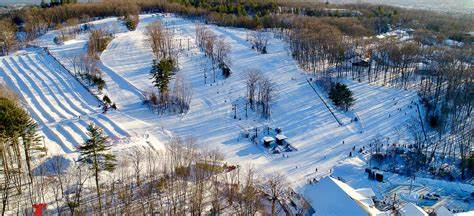
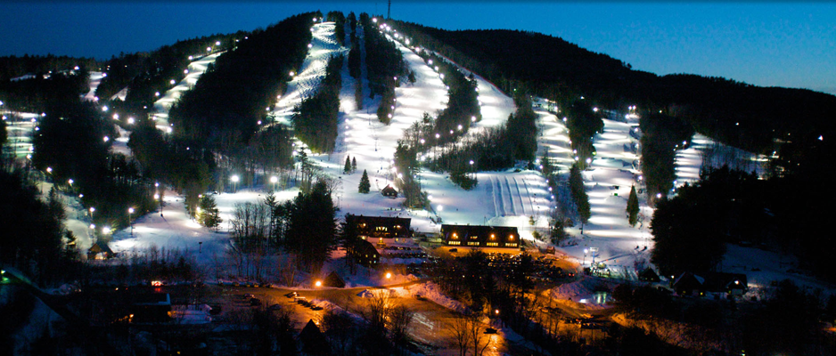
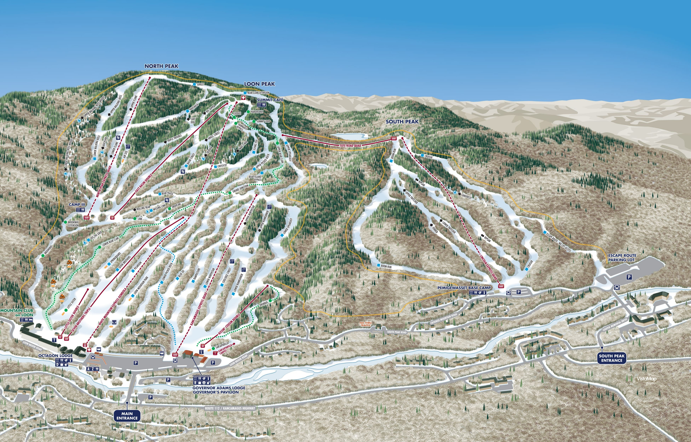
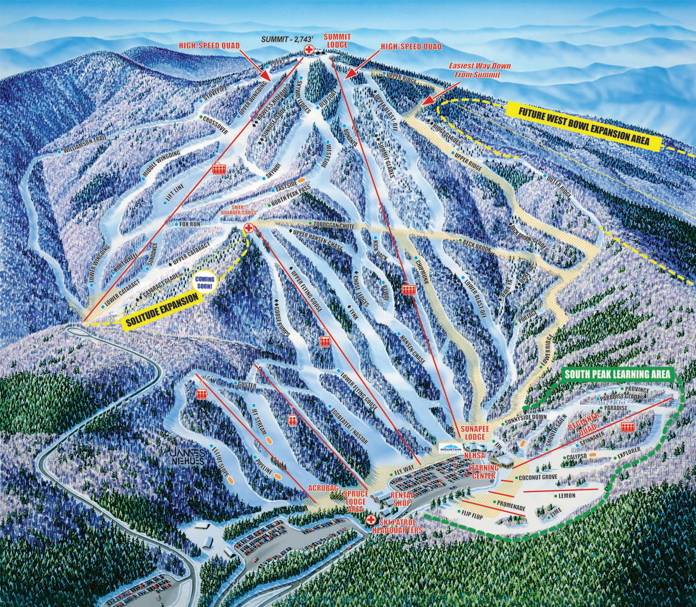
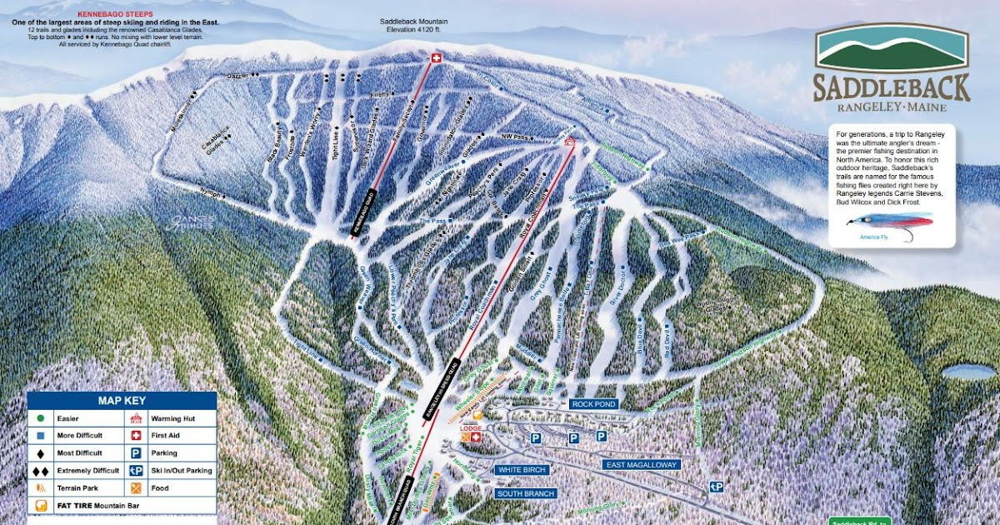
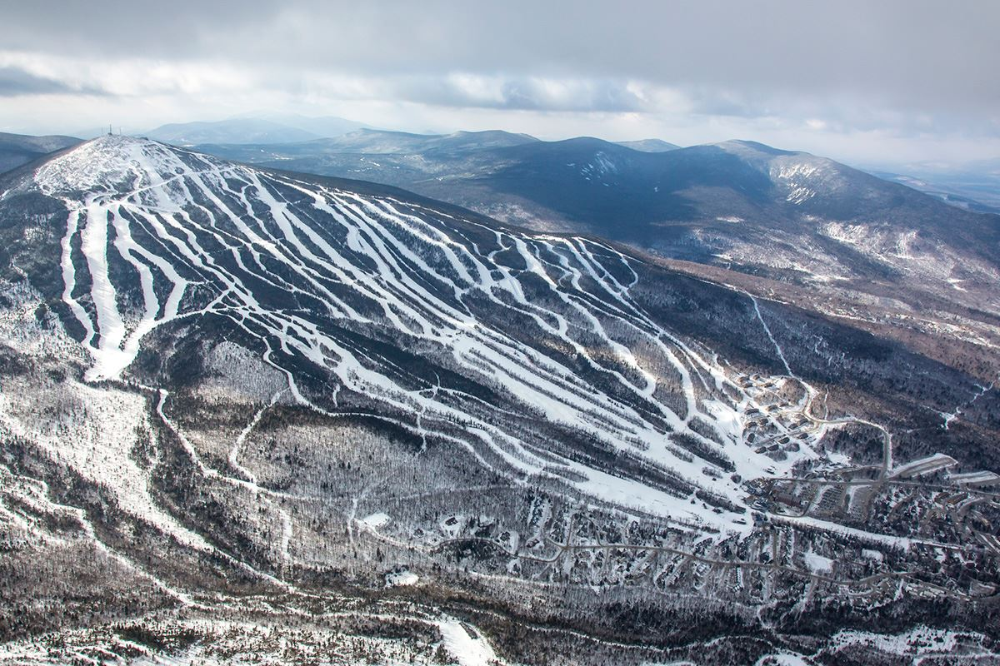
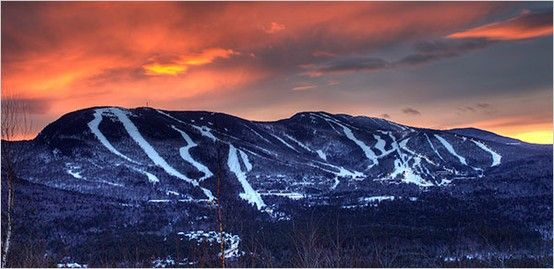
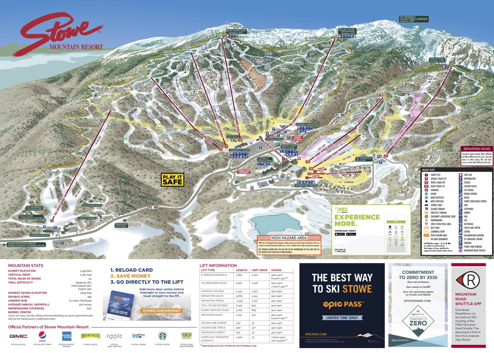
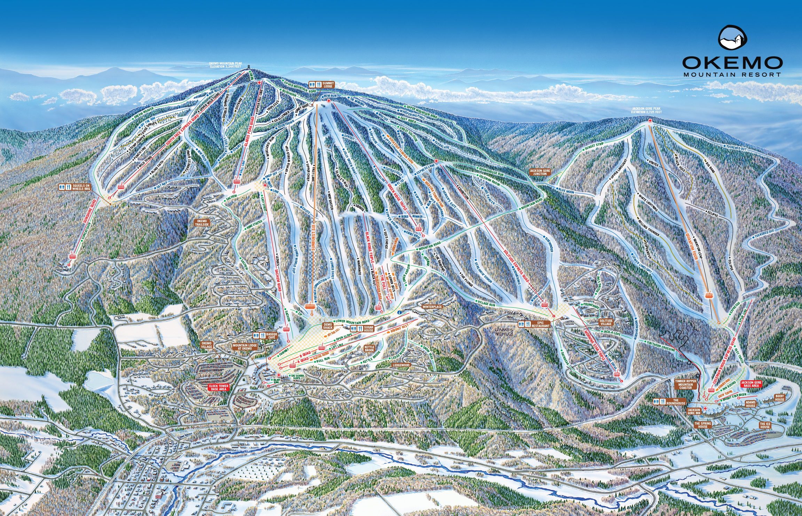
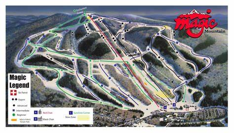

Here we will provide you with what we feel are the best mountains in New England for all types of riders, from small beginner mountains to the biggest mountains in the east, here is our favorite selection!
The best mountains in New Hampshire for all types of snowboarding are these mountains, the order will coincide with the pictures. Mcintyre, Pats Peak, Loon, and Sunnapee. These are some of the best mountains for beginners-experts in all of New England.
   Discover the best mountains in maine from Saddleback, to Sugarloaf, and Sunday River. With mountains such as Sunday River including seven peaks, there are hundreds if not thousands of hours of shredding capability.
  Discover some of the biggest and best mountains in New England, from X-games sized terrain parks to olympi style moguls to the easiest of bunny carpets. .
  